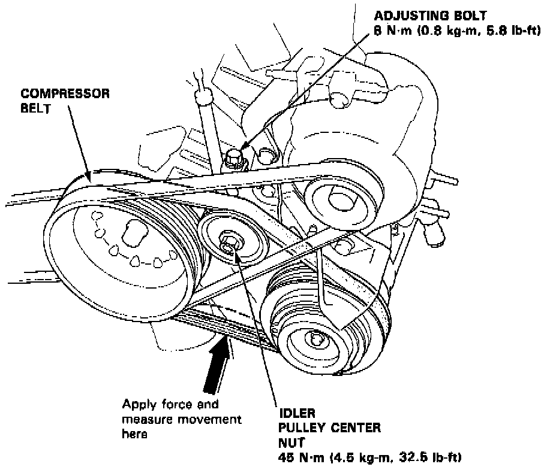

Drive Belt: Adjustments

1. Loosen the idler pulley center nut and the adjusting bolt.
2. Adjust the compressor belt tension by turning the adjusting bolt.
Belt Deflection Under A Force Of 22 lbs
New Belt: 5.0 - 6.5 mm (0.26 - 0.30 in)
Used Belt: 8.0 - 10.0 mm (0.32 - 0.40 in)
3. Tighten the pulley center nut, then tighten the adjusting bolt securely. Torque to 45 Nm (32.5 lb-ft)
- "New belt" refers to a belt which has been used less than 5 minutes on a running engine.
- "Used belt" refers to a belt which has been used on a running engine for 5 minutes or more.
NOTE:
Check for belt damage. If necessary, replace the belt.